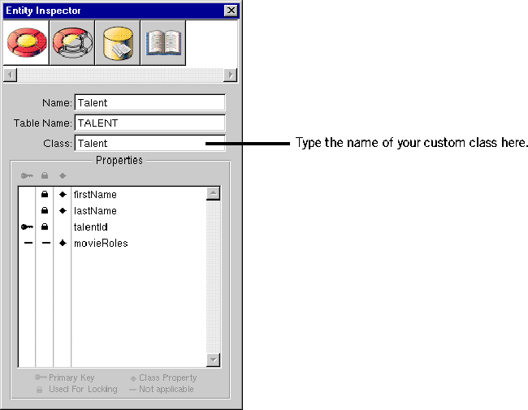

Creating a WebObjects Database Application
 Table of Contents
Table of Contents  Previous Section
Previous Section
Specifying Custom Enterprise Object Classes
Unless you specify otherwise, EOModeler maps entities to the GenericRecord class. When you want to use a custom class instead, you need to specify that custom class in the model.
- In EOModeler, inspect the Talent entity.
- In the Entity Inspector for Talent, type Talent in the Class field.

- Set the MovieRole entity's class to MovieRole.
Now you can generate the source files for your Talent and MovieRole classes.
Table of Contents  Next Section
Next Section